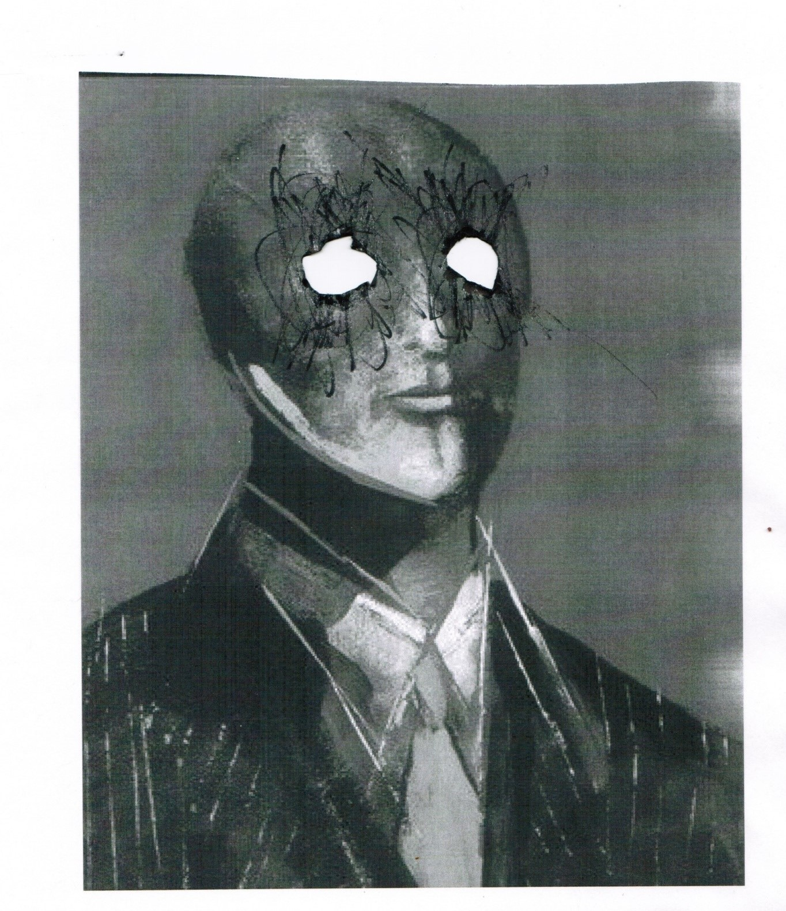
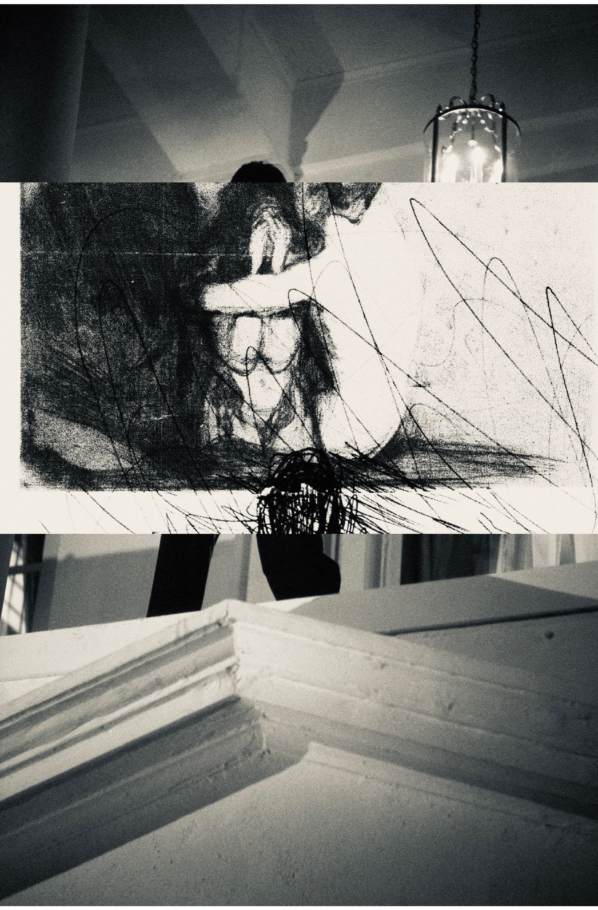
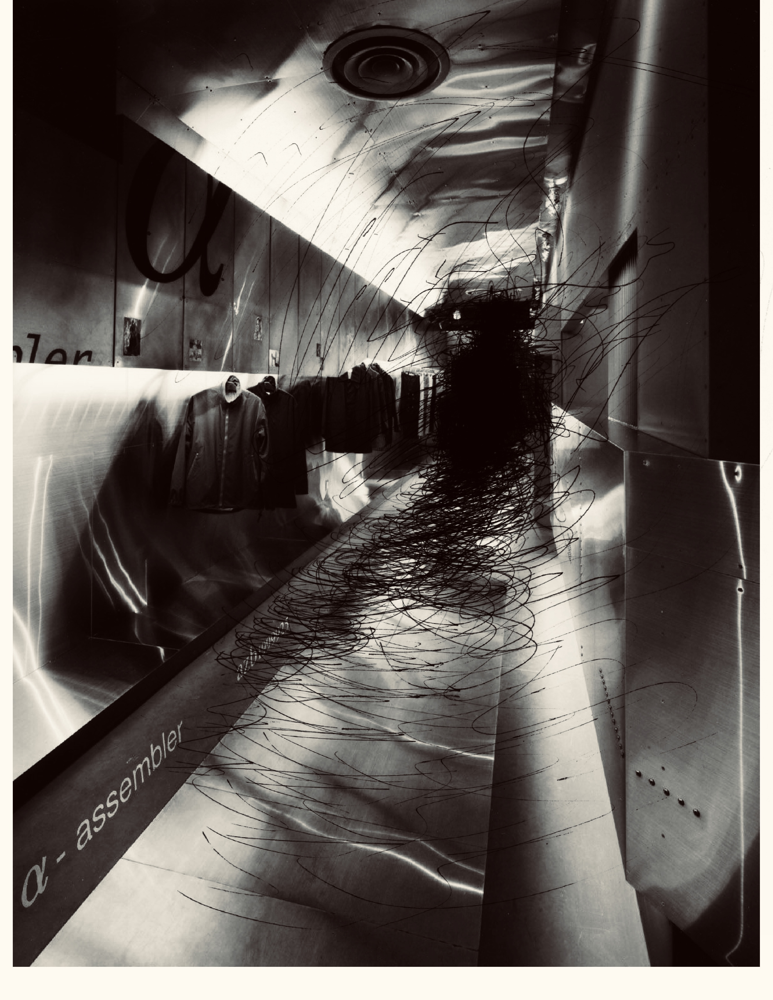

The Rolodex
I have a sour taste in my mouth as Aaron’s picture flits across my screen. So, he really was becoming a musician. Well, good for him. I change my tune, lofty. He finally got what he wanted and he’s going forth with his new muse and her crayon coloured hair, and they’ll gather ye round the campfire and make love under the stars and mock Neo-Liberalism, pledge sacrifice to Marx, Joyce, Plath and circle-jerk each other’s ego into tantric oblivion. Great!
My new Alexander Wang sweatpants cling thoughtfully to my slim thighs as I run. Sunlight gazes over the neighbourhood, hitting the trees just the way I like. I run purposefully. There is a certain charm about this street – high-arching buildings and a huge foliage canopy coating the sky. It’s still city, despite the several townhouses with stucco exteriors (who were they kidding?), but just enough suburbia exists to feel slow-paced.
Second shower of the day just to feel fresh. Put on heels. Pop a Ritalin. There’s a heavy-weight meeting today and I need to look alive. The Bohemian caravan nightmare still looms over me, but I repress that thought. I kiss T goodbye as he’s on call with IT setting up his at-home-Apocalypse trading kit because Money never sleeps. T is good looking. He works at Goldman Sachs. His father also worked at Goldman Sachs. His passions include the gym, work and himself and he says he doesn’t take steroids. I touch his arm in an awkward show of affection and his muscles flex under my fingers, jumpy, in a mind of their own.
I must find someone palatable to date them. He has to be 6’2 because it is the golden ratio. 2 in 6 is 3 and that’s God’s perfect number. Also, if I wear heels, we’re almost the exact same height just like Carolyn and John Jnr and as a couple that’s insanely attractive.

I met Brian at a lame College party. The first thing he asked me was what I thought of Foucault’s essay Discipline and Punish. I said it was agreeable, pretending I had read it and we continued our conversation from there. He offered to get me a drink and I said, okay thanks. I pretended to sip on the beer. At the end of the night I was completely sober, and Brian was drunk enough where his responses were brutally honest.
Isn’t the concept of macroeconomics stupid because every 20 minutes spent learning the damn thing the world’s already taken new form. I’ve become redundant, some fucking computer’s taken my job.
His eyes bulge, frenetic energy pumping. "Feel my arms," he mumbles. His muscles strain so tightly I can almost trace the blue-green veins with my index finger. I raise my eyebrow as if to ask, steroids? His arms confirm.
I don’t think a computer can wholly replace a trader.
At a shitty mid-tier firm maybe, but not at Goldman.
He thumps his chest, points his hand to the sky as if to say, here I come baby. I roll my eyes.
The work at Goldman is not simply through the opportunistic comings of nepotism if that helps you sleep better at night.
He looks at me pointedly, as if to say, you wouldn’t understand that sort of world because you’re a left-wing Liberal Arts student with a penchant for dreaming, too scared of the reality of your own skin even. We talk a little more until Brian passes out on the foyer. Over the horizon the morning fog begins to condense. I’m still pumping with adrenaline from his look and I think, this is flight or fight. Here is a man dismissing your character, your existence. Brian snores softly, then loudly.

Brisk strides carry me to my office. I slot the brown paper bag under my arm as I walk past Monique, she’s inspecting the new arrivals on her clothing rack, Starbucks in hand. I hear my name. I follow. She holds up a silky Anine Bing camisole.
Yes.
She wrinkles her nose.
We’re trying to go for a more inaccessible look this season, cull it.
Done.
My office is well-designed. It’s furbished in a 70’s deco Californian style with beachy woods and a careful collection of German post-war Abstract art. Grim, but beautiful. A small record player is a fixture in the corner of my office. I unbag the vinyl, tear off the thin coating of plastic and place it on the record player.
I want to criticize – just for 20 minutes as everyone is having their morning tea. I wish I broke his entire record collection, 23 years of collecting down the drain in one moment with the help of a box-cutter. Ha! That would have given him something to mull over. I’m not nice. But Aaron would have loved that because men like Aaron love having things happen to them.
The first chords of his band’s most popular song, You, begin to play through my office. About 30 seconds in, I smile. I hate it. The non-descript lyrics are cryptic, the chords unoriginal, the cover art, promotional pictures, uninspired.
I feel better, so what he gets to play music at select venues and clubs? One day, you’re no longer twenty-something and pretty, trampy girls aren’t throwing themselves at you. You realise your supposed humble pursuit of musical art was really a thinly veiled attempt at having because when you were younger, you didn’t have anything.
My morning’s nearly over and I’m satisfied at the dissertation I’ve crafted in my head about Aaron’s fallacies.

I can’t sit still because I feel sick after the Bulls lost the game this afternoon. Julie takes a bite of yellowtail, her eyes fixated on the silvery fish flesh. You look beautiful today. She looks up and shoots one of her famously fake smiles.
Thanks, babe.
Julie and I have been seeing each other for about a year now, and we’ll continue to see each other because we’ve both reached that stage in life where it was socially expected that we settle down and have kids. We have a lot in common too.
She’s just about to take a sip of wine and I’m almost excited about seeing her do her slight-nose-crinkle-cheek-redden thing. I anticipate, until I feel a hand tap my shoulder. I turn my head and see Paul McDougall, square-shouldered and tight faced.
He guffaws and slaps Julie’s shoulder in a playful way, as if two old friends reconnecting. I can sense she’s annoyed. Her shoulders set. Suddenly she’s no longer so small. Her bones taught against skin. Face, grisly. Anyways, what have you been up to? I barely seen you out nowadays. Todd told us about the fucking problem. He winks. Of course, Todd told you. We should catch up sometime. Next week. Free seats at SOBU, Derrick’s paying for lunch. We were both trying to go for the Meredith deal, is that a sore point?
No, he’s in love. Newlywed.
Perfect. Consider it a drinking lunch.
See you then.
He turns over to Julie and winks.
You look beautiful as always, Katie.
Julie snaps inside despite her non-responsive state. er eyes pin me under with a feral gaze. Too bad Paul is fucking clueless. He retreats into the murky depths of MATSUHASHI. She tries to pick up the thinly sliced piece of fish (fresh beyond comparison) but her fingers shiver at the sudden adrenaline burst. She stabs the fish with her Mitsuhashi oak wood chopsticks, tearing the flesh. Through gritted teeth.
Who the fuck is Katie?
I frown.
An ex who Paul happened to meet a long time ago.
An ex who apparently looks exactly like me.
She doesn’t look anything like you. Paul’s an idiot, you’re prettier.
Tim, shut the fuck up. Why does your friend think that we look alike? He clearly thinks we look the same.
Well look at his girlfriend.
He wasn’t with a girl. Are you fucking delusional? Are you on coke right now? Jesus Christ, do you keep me a secret or something?
Keep your voice down. You’re making a scene.
Good. I want to make a fucking scene. God, is she thinner than me?
No, the only similarity between you and her is that you’re both Asian, that’s it. Paul is a fucking idiot, a big bozo.
Julie relaxes fractionally. She reaches for the wine.
The city passes through the black-tinted lens of the Mercedes Classe A and I notice on a poster for the American Ballet, angry red graffiti spelling out ‘Die Capitalist SCUM!!!!!!!’. All 7 exclamation points dribble down in a dusty muted red.
Julie stares at her sparkling wedding ring – a 4.5 carat diamond set in a thick band fashioned with tastefully muted gold. She glances at it every few minutes, as if inspecting if the diamond had dulled in colour.
Babe I think we should cut dairy from our diets. I read this article in the Wall Street Journal that the industry is getting fucking filthy with their production. Not even Dean & Deluca carry decent stuff anymore. I should tell Julietta to throw away what’s in the fridge. You’ve been breaking out on your back which is alarming, especially for a 34 year old man. I think I know why though. I know you’re lying to me.
I whip around.
What did you say?
I know you’re trying for it.
Trying for what?
The new position, and I think you should. You shouldn’t limit yourself. Don’t lose an opportunity to be great.
Ok.
My tone is clipped, frank and I can sense Julie’s ego prickling. I am making her the nagging chastising wife, when she pictured herself in this conversation as cool, sexy, understanding.
Good.
Equal ice.

Naturally the most inoffensive things are at the top. I watch her reach into the box and take out two clean syringes and a small vial of Halotestin. Then opalescent glassy pills follow - they could be almost be mistaken for fish oils. Julie grabs several bright yellow canisters. She opens them and pours the white pills onto the carpet, innocuous. Like Skittles for her. Unfazed, onward her hunt.
Katie’s eyes widen at the steroids, she’s shocked. Her face becomes white, against her black bangs.
Tim, are these yours?
Julie continues to rummage through the box. She admires her new treasure - a collection of disks with cryptic dates scrawled across them. She throws them across the room with a guttural scream. The wooden box reaches an end. There’s nothing in it. She shakes it. There’s a slight thumping sound. Expertly, Julie tears open the secret compartment.
Katie’s crying.
I can’t believe you’re doing this to me. I can’t believe everything about us was built on your lie.
She picks up her thick grey felt coat. iPhone 6S. Unsuspecting, innocuous, old remnants of a past, she won’t care. Julie. Stop, there’s nothing there. But she’s determined, she runs to the wall socket and plugs the phone in. The wait begins. I move towards her, I’m soft, I’m forgiving. She can’t see what’s on the phone. No, don’t you fucking dare come any closer. She paces across the bedroom, her diamond ring in palm. She’s rubbing her forehead, trying to numb her thoughts. Something catches Katie’s eye on her way out. Black, shiny, hidden under my Armani shoebox. She picks up my rolodex and begins to devour picture after picture.
Who are these girls?
She dissipates in on herself, quiet.